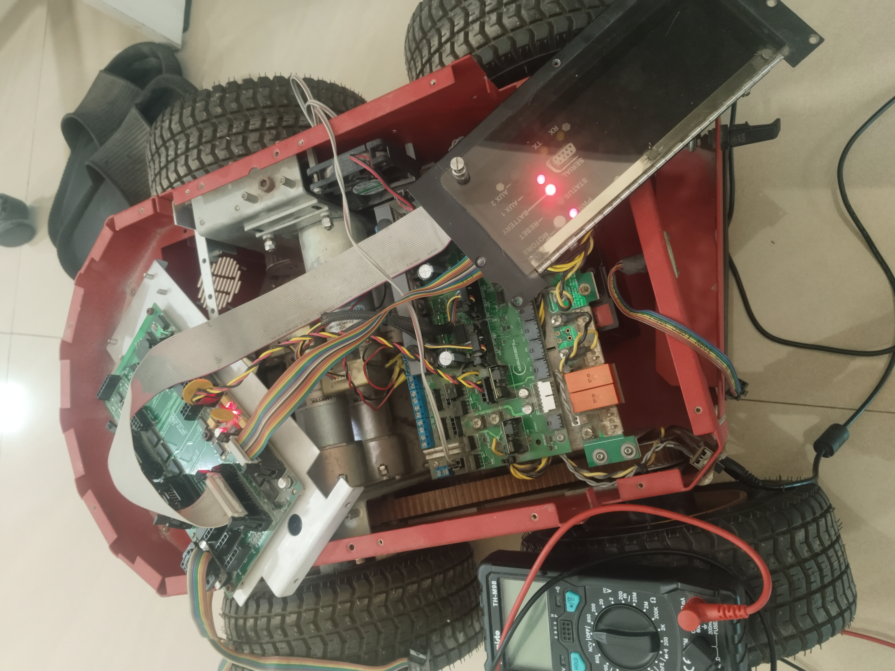

Pioneer 3-AT Rehabilitation

Overview
The Pioneer 3-AT Rehabilitation project focuses on restoring and upgrading a legacy autonomous mobile robot. The work involves mechanical inspection, hardware restoration, ROS2 integration, controller analysis and preparation for autonomous navigation.
My Role
- Mechanical inspection of the robot
- Reassembly and rehabilitation
- ROS2 setup and testing
- Hardware diagnostics
- Preparing the robot for LiDAR integration
Software & Tools
- ROS2 Humble
- Ubuntu 22.04
- Fusion 360
- Gazebo
- Python
Skills Gained
- Mobile Robot Architecture
- Robot Rehabilitation
- Mechanical Integration
- ROS2 Workspace Management
- System Testing
Project Gallery


